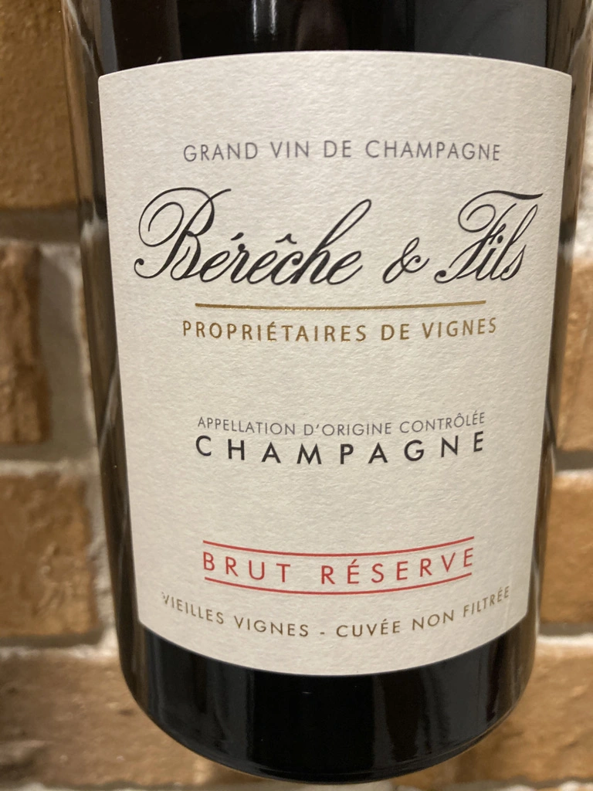
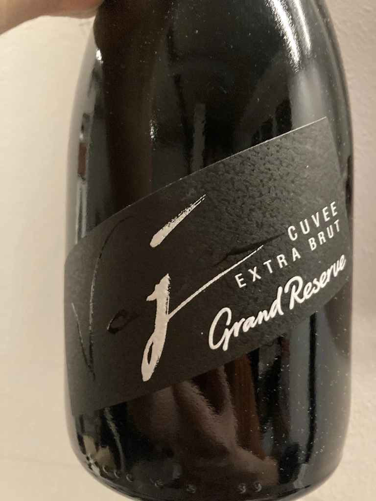
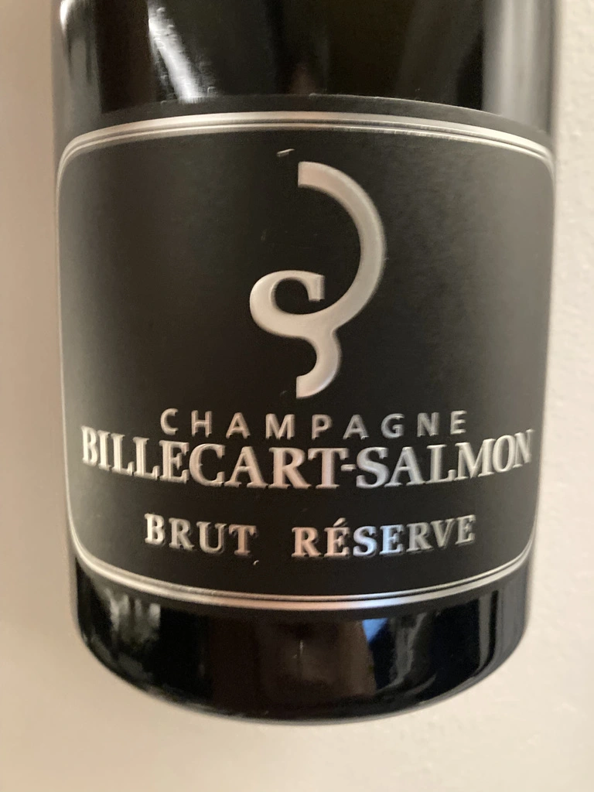
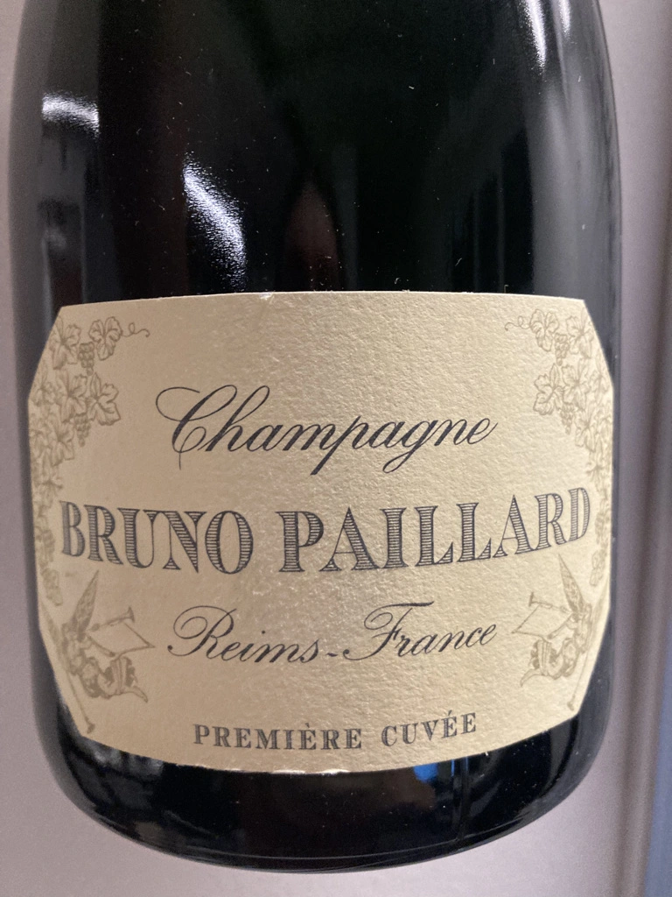

- Type
- White Sparkling, Extra brut
- Producer
- Marco de Bartoli
- Vintage
- 2018
- Location
- Italy, Sicilia DOC
- Grapes
- Grillo
- Alcohol
- 11
- Sugar
- 3
- Price
- 930 UAH
- Cellar
- N/A
Ratings
2021-12-21 - 8.00
Tasted as part of Classy Bubbles event.
Excellent Sicilian metodo Classico. All the good stuff mixed in one bottle - bubble, complex bouquet and delicious, multilayered palate. Grapefruit, soaked apple, iodine and Jerez. And when you make a sip, it’s like letting a sea wave fill and wash your mouth.
Related






